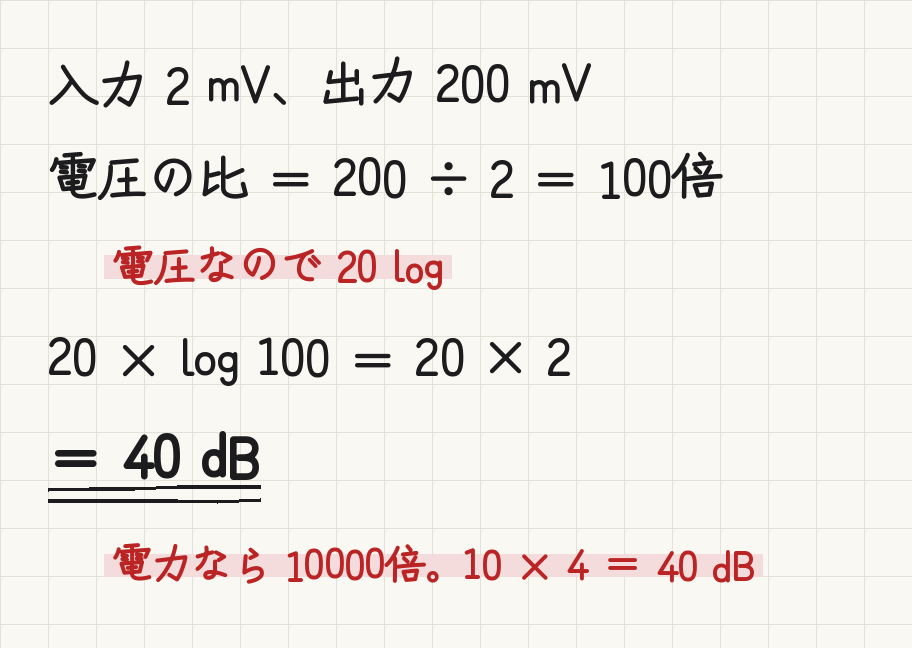

10 log と 20 log の違い：どちらを使うか
デシベルの式には、10 log と 20 log の2つが出てきます。どちらを使うかで止まる人は多く、質問の場でも繰り返し聞かれています。
先に答え電力の比なら 10 log、電圧や電流の比なら 20 log です。電力は電圧の2乗に比例するので、同じ変化を dB にすると、どちらで数えても同じ値になります。電圧が10倍なら電力は100倍で、どちらも 20 dB です。
どこで止まるか
止まる段立式電力は電圧の2乗に比例する、という1行が省かれ、10 と 20 の2つの式だけが並びがちです。
「電圧が2倍だから 3 dB」としてしまう。3 dB は、電力が2倍のときです。電圧が2倍のときは 6 dB です。
なぜ 20 になるのか
抵抗が同じなら、電力は電圧の2乗に比例します。電圧が2倍になると、電力は 2 × 2 ＝ 4倍になります。
電力の比 ＝（電圧の比）の2乗
10 log（電圧の比の2乗）＝ 2 × 10 log（電圧の比）＝ 20 log（電圧の比）
10 log（電圧の比の2乗）＝ 2 × 10 log（電圧の比）＝ 20 log（電圧の比）
2乗が、log の外に出て 2 になります。それが 10 に掛かって 20 です。新しい決まりではなく、同じ dB を、電圧の側から数えているだけです。
| 電圧の比 | 電力の比 | dB |
|---|---|---|
| 2倍 | 4倍 | 6 |
| 10倍 | 100倍 | 20 |
| 20倍 | 400倍 | 26 |
| 100倍 | 10000倍 | 40 |
表のどの行も、電圧から数えても、電力から数えても、同じ dB になっています。
見分け方
問題の文で、比べている物の単位を見ます。W なら 10、V か A なら 20 です。電界の強さ（V/m）も、電圧と同じ仲間なので 20 です。

10 log と 20 log の式のまとめ
電力の比：dB ＝ 10 log（出力の電力 ÷ 入力の電力）
電圧・電流の比：dB ＝ 20 log（出力の電圧 ÷ 入力の電圧）
電圧・電流の比：dB ＝ 20 log（出力の電圧 ÷ 入力の電圧）
電力が2倍なら 3 dB、10倍なら 10 dB。電圧が2倍なら 6 dB、10倍なら 20 dB です。20 log は、入力と出力の抵抗（インピーダンス）が同じときに使えます。
別の呼び方：電力の比は電力利得・電力増幅度、電圧の比は電圧利得・電圧増幅度と書かれます。log は、10 を底とする常用対数です。
確かめの1問
増幅器の入力が 2 mV、出力が 200 mV です。利得は何 dB ですか。
増幅器の入力が 2 mV、出力が 200 mV です。利得は何 dB ですか。
答え
電圧の比は100倍。電圧なので 20 log を使い、20 × 2 ＝ 40 dB。紙の上で繰り返して固めたい方へ：書き込み式の問題集の案内 ／ 数を入れて確かめる：デシベルの計算の道具
最終更新：2026年11月17日